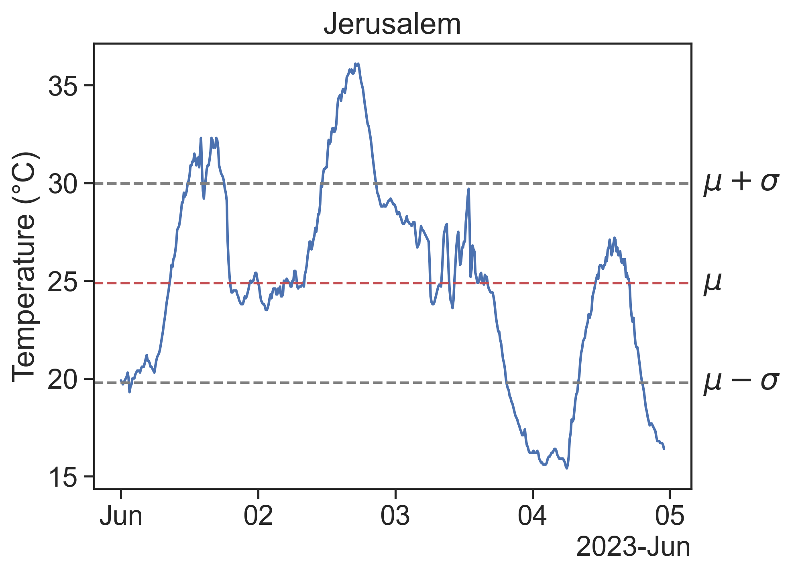
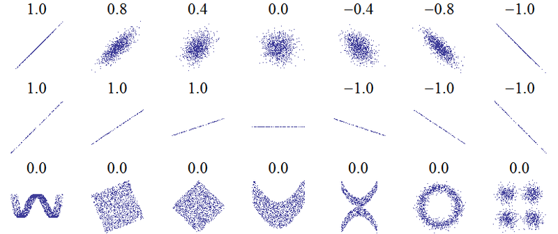

29 autocorrelation
In this section, we will make use of a few fundamental concepts from statistics. Knowing these concepts well is fundamental to make sense of stationarity.
29.1 mean and standard deviation
Let’s call our time series X, and its length N. Then:
\begin{aligned} \text{mean\qquad}& &\mu &= \frac{\displaystyle\sum_{i=1}^N X_i}{N} \\ &\\ \text{standard deviation\qquad}& &\sigma &= \sqrt{\frac{\displaystyle\sum_{i=1}^N (X_i-\mu)^2}{N}} \end{aligned}
The mean and standard deviation can be visualized thus:

29.2 expected value
The expected value (or expectation) of a variable X is given by E[X] = \sum_{i=1}^N X_i p_i.
p_i is the weight or probability that X_i occurs. For a time series, the probability p_i that a given point X_i is in the dataset is simply 1/N, therefore we can write the following measures in terms of expected values:
What if my time series clearly has data points with probability greater than 1/N? For instance, consider this temperature time series, in degrees Celcius:
X = \{21,25,25,20,26,25\}
The value 25 appears in half (3/6) of the samples. Its weight in the equation for the expected value will be 1/N counted three times, that is, 3/N. The probability of each value will automatically be what it needs to be when we use this formula.
- mean, also called 1st moment: \mu = E[X].
- variance, also called 2nd moment: \sigma^2 = E[(X-E[X])^2] = E[(X-\mu)^2]. Of course, \sigma is called the standard deviation.
- you might have heard of the 3rd moment (skewness) and 4th moment (kurtosis), they are also useful sometimes. Higher order moments are not common.
29.3 covariance
The covariance between two time series X and Y is given by
\begin{split} \text{cov}(X,Y) &= E[(X-E[X])(Y-E[Y])]\\ &= E[(X-\mu_X)(Y-\mu_Y)] \end{split}
Compare this to the definition of the variance, and it is obvious that the covariance \text{cov(X,X)} of a time series with itself is its variance.
29.4 correlation
We are almost there. I promise.
The fact that \text{cov(X,X)} = \sigma_X^2 begs us to define a new measure, the correlation:
\text{corr}(X,Y) = \frac{E[(X-\mu_X)(Y-\mu_Y)]}{\sigma_X \sigma_Y}.
This is convenient, because now we can say that the correlation of a time series with itself is \text{corr}(X,X)=1.
This is also called the Pearson correlation coefficient, and the result has a value between 1 and -1.

Source: Wikimedia

29.4.1 curious fact 1
Isn’t the expression for the correlation suspiciously similar to something we just saw in the last lecture?
Remember that we defined the Z-score of a single data point as z = \frac{x-\mu}{\sigma}, where x is a specific data point. If we apply this to every point of the time series X, we get a new, standardized series Z_X, whose i-th element is Z_{X,i} = \frac{X_i-\mu_X}{\sigma_X}.
Therefore, we can interpret the correlation as the expected value of Z_X times Z_Y:
\begin{split} \text{corr}(X,Y) &= \frac{E[(X-\mu_X)(Y-\mu_Y)]}{\sigma_X \sigma_Y} \\ &= E[\frac{X-\mu_X}{\sigma_X}\frac{Y-\mu_Y}{\sigma_Y}] \\ & = E[Z_X Z_Y] \end{split}
The correlation is thus the expected value of the product of standardized time series.
29.4.2 curious fact 2
There is a magnificent geometric interpretation for the correlation of two time series. Take the standardized series Z_X and Z_Y, and scale each of them down by 1/\sqrt{N}:
\vec{a} = \frac{Z_X}{\sqrt{N}}, \qquad \vec{b} = \frac{Z_Y}{\sqrt{N}}.
These are now unit vectors (|\vec{a}|=|\vec{b}|=1) in an N-dimensional space, because \sum_i Z_{X,i}^2 = N (go ahead, check it from the definition of \sigma). The dot product of two vectors is
\vec{a}\cdot\vec{b} = |a|\, |b| \cos(\theta),
The dot product is the sum of an element-wise multiplication:
\vec{a}\cdot\vec{b} = a_1b_1 + a_2b_2 + \cdots + a_Nb_N
Because \vec{a} and \vec{b} are unit vectors, \vec{a}\cdot\vec{b}=\cos(\theta). But the dot product is also
\vec{a}\cdot\vec{b} = \sum_{i=1}^N \frac{Z_{X,i}}{\sqrt N}\frac{Z_{Y,i}}{\sqrt N} = \frac{1}{N}\sum_{i=1}^N Z_{X,i}Z_{Y,i} = E[Z_X Z_Y] = \text{corr}(X,Y).
So we have
\text{corr}(X,Y) = \cos(\theta).
The correlation between X and Y has to be between -1 and 1 because the cosine of the angle between them is also bounded by these values. Furthermore, when two time series have zero correlation, this means that they are orthogonal (\theta=\pi/2) in this N-dimensional space. Mind. Blown.
Note that the standardized series Z_X itself is not a unit vector — its norm is \sqrt{N}, since \sum_i Z_{X,i}^2 = N. It only becomes a unit vector once we also divide by \sqrt{N}, as \vec{a} does above.
29.5 autocorrelation
The autocorrelation of a time series X is the answer to the following question:
if we shift X by \tau units, how similar will this be to the original signal?
In other words:
how correlated are X(t) and X(t+\tau)?
The autocorrelation is expressed as \rho_{XX}(\tau) = \frac{E\left[ (X_t - \mu)(X_{t+\tau} - \mu) \right]}{\sigma^2}
In other disciplines, the autocorrelation is simply the autocovariance, i.e., it is not normalized by dividing by \sigma^2. In time series it is assumed that the autocorrelation is always normalized, therefore between -1 and 1.
The autocorrelation function \rho_{XX}(\tau) provides a useful measure of the degree of dependence among the values of a time series at different times.
A video is worth a billion words, so let’s see the autocorrelation in action:
A few comments:
- The autocorrelation for \tau=0 (zero shift) is always 1. [Can you prove this? All the necessary equations are above!]
29.6 try it yourself
Pick one of the example signals below, then drag the slider to change the shift \tau and watch how the autocorrelation responds. Notice how differently each signal’s autocorrelation behaves with the shift.